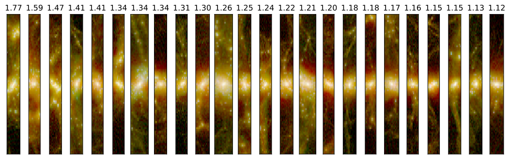
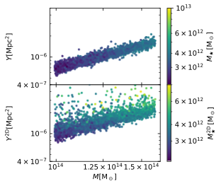
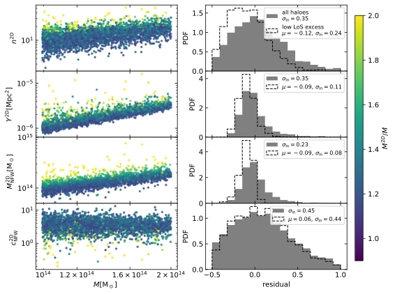
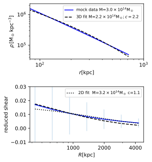
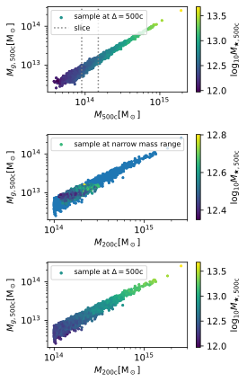

Source: Euclid Collaboration: Ragagnin et al. (2025)
The future is about multi-wavelength observations
Different observational properties are have different biases and react differently with projection effects. For instance X-ray may be X-ray peak biased (Pacaud et al. 2016), while they are very lucky when it comes to projection effects since X-ray emission scales with gas fraction squared (see Kaiser 1986 or Eq. 2.2 in these very nice lectures, or de Silva 2004 eq. 4), it's much more sensitive to peaked emissions and thus less affected by interlopers in the line of sight (LoS). On the other hand, thermal SZ signal scales with the gas mass of a cluster (see de Silva 2004 eq. 1). For what concern the optical sector, similarly richness (and of course stellar mass) scales linearly with the contributing matter in the line of sight. Then, reconstructions from weak lensingare much more complicated: the ΔΣ weak lensing signal contains a surface density term that is integrated from 0 to R (see Brainerd 2004, Eq. 10), which may run the risk of "spreading" details of Σ that are in the center of the cluster (and thus making it more difficult to model it with profiles as NFW).
Writing this paper was a great journey as it uncovered how line-of-sight interlopers artificailly boost correlations at all wavelengths; and how small non-NFW of total matter profiles impacts WL; and how multiwavelength mixing apertures (e.g. 500c for X-ray and 200c for SZ) introduce biases related to the sparsity (and thus on accretion history, see Richardon & Corasaniti, 2021).
Few words on the numerical setup
For this study we used my favourite simulation suite, Magneticum Box2b/hr,
we chose a "Euclid-motivated" mass range (see Sartoris works) of halo masses M_200c > 1e14 Msun
and redshifts of z ~ 0 and z ~ 1 to intersect redshifts of X-ray, SZ, and weak lensing obervations.
So we computed syntetic properties for both Eucliud-like and potential other multi-wavelength observations:
- Euclid-derived properties: Richness (following Andreon+ technique), stellar mass, weak lensing mass, and halo concentration from NFW fits.
- Complementary multi-wavelength data: X-ray luminosity, thermal SZ signal, gas mass, temperature,
Pay the right care to your observations as projection effects spuriously boost correlations (in different ways)

When quantities are computed in projection, they will get contribution from the interlopers in the line-of-sight. This is going to boost the luminosity in all bands, however in a different way. Thermal SZ and stellar mass for instance, they scale linearly with the amount of matter in the line of sight, we can see in the image on the left, when quantities are computed on a cylinder (of 20cMpc/h) instead of a sphere, they will get a correlation (on the other hand X-ray depends on electron density squared and is much less affectd by projection effects).
To this purpose, in the image on the left, I show stellar mass scaling relation coloured by SZ signal both in 3D (top panel) and both in 2D (bottom panel). Notice how going to 2D creates a correlation between the observables that was not present in 3D. Basically, observing things in 2D is going to create new spurious correlations between observables.
Here below I show it much better: I colour code the 2D observable relations by the fractional amount of total mass in the line of sight (the same value that is shown in the top figure). Note the vertical gradient! Residuals of the mean are basically mere indexes of the line-of-sight projected mass.

Remember: non-NFWness of galaxy clusters will bias your weak lensing mass-reconstruction
DMO simulation profiles are wonderfully well fitted by NFW profiles. However, people often assume that full-physics simulations should also follow an NFW profile.. And if you are wondering, the density profile of galaxy clusters it is well known to have deviations from NFW at small radii. It is of course fine to fit a NFW in hydrodynamic simulations, as long as in you take into account the consequent limitations! For instance, as long as you perform a 3D fit farther away from the cluster core, you are going to recover, however, what I show in the paper is that in the case of weak lensing, unfortunately, this is not the case.

This is proved very easily in the following experiment: let's go fully analitical and check how non-NFWness impact 3D and 2D fits. In this experiemnt I use colossus to produce a simil-NFW profile, where the internal and external slope are slightly more steep than the classic -1 and -3 values. In the top panel we see the 3D fit is unaffected, while the ΔΣ is strongly affected (remember it contains an average from 0 to R).
Know how to combine observables from different apertures properly:

Let's consider the following expertiment: we have a gas mass scaling relation (here left, top panel) and focus on a tiny mass bins (vertical dashed lines) and change the x axis aperture from 500c to 200c (keeping the gas mass at 500c of course): what happens? The result is the middle panel, the data points spreaded over a larger 200c-mass bins, and the color coding now is showing a vertical trend! The color by the way, is the stellar mass, why is it happening? We do expect gas-poor objects to be old, therefore to have a smaller sparsity, therefore to have lower M200c at fixed M500c! So basically, the simple fact that sparsity correlates with dynamical state introduced a bias between observable correlations when showing them at different apertures (in this case, gas mass at 200c and stellar mass at 500c).
What you need to ensure when it comes to projection effects
While X-ray observations are one of the least affected by projection effects, observations as the SZ derived ones are most affected, this should be remember when doing multi-wavelength studies.
The complication here is that X-ray images are typically within R500c while SZ and optical within R200c, mixing them may produce some biases due to dynamical state.
Moreover, no-one really thinks galaxy clusters should follow NFW profile in their very center, and this is of corurse not a problem when dealing with 3D core-excised observations, however, being ΔΣ dependent on an integral from 0 to R, the non-NFWness signatures can be seen up to large (~300-400 kpc scale) radii this must be remembered when dealing with weak lensing observations
You can find the exact values of the 3D and 2D covariance matrixes in my paper Euclid Collaboration: Ragagnin et al. (2025).
Here below, I leave the PDF slides of a internal meeting presentation I gave in 2025.